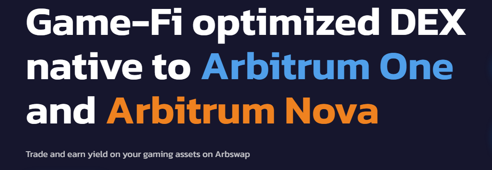

This handbook explains Arbswap for power users: Arbswap v2 pool design, modeling effective price (received tokens minus L2 gas, L1 data cost, and pool fees), and order sizing by depth. You’ll also find LP strategy, analytics KPIs, Arbswap Bridge safety, and a troubleshooting runbook.
Arbswap Pools — Execution & Liquidity Behavior
Arbswap v2 supports two AMM archetypes: volatile (constant-product x·y=k) for non-correlated pairs and stable (curve-like) for correlated assets. On Arbitrum, gas is modest but not zero; the router may add a stable pivot to reduce price impact when trade size is significant.
Stable vs Volatile — Practical Comparison (Arbswap v2)
| Dimension | Stable Pools | Volatile Pools |
|---|---|---|
| Liquidity Shape | Curve compresses slippage near parity (pegged/strongly correlated pairs) | Classic x·y=k; slippage increases with size vs depth |
| When It Wins | Stablecoins, wrapped/pegged assets, routing pivots | Non-correlated majors and alt pairs with steady flow |
| Routing Notes | Often improves net output as a pivot on larger tickets | Direct path is simple and cheapest on gas |
| LP Considerations | Lower IL; fee APY tied to stable volume & tight spreads | Higher IL risk; fees offset IL when two-sided flow persists |
Swap Methods on Arbswap (Router, Direct, Aggregators)
For small tickets, a direct Arbswap v2 route often suffices. For larger trades, the router may combine a stable pivot with a volatile leg to minimize impact. If moving value from another chain, use a reputable bridge (see Arbswap Bridge notes), then execute locally on Arbitrum.
Method Comparison for Arbswap Execution
| Method | Best For | Key Features | Considerations |
|---|---|---|---|
| Arbswap Router | Net-best price | Chooses stable vs volatile; multi-hop if needed; scores by effective price incl. L1+L2 fees | Always verify token contracts; inspect route preview for size |
| Direct Stable | Correlated pairs | Curve near parity; tight execution on size | Thin stables can underperform deep volatile pools |
| Direct Volatile | Non-correlated pairs with depth | Simple path and lower gas | Slippage grows with trade size |
| External Aggregator | Cross-venue checks | Benchmarks Arbswap Exchange vs others | Extra hops; compare net after all fees |
Arbswap Bridge — Best Practices
“Arbswap Bridge” refers to moving assets into Arbitrum before trading on Arbswap Exchange. Use reputable bridges, verify destination token contracts on an Arbitrum explorer, and keep extra ETH for L2 gas (and implicit L1 data costs). On exits, note withdrawal finality and challenge windows where applicable.
Bridge Safety Checklist
- Use official links only; beware look-alike domains and search-ad impostors.
- Bridge a micro-test first; verify the received token contract on Arbitrum.
- Keep ETH for approvals and swaps after bridging; record bridge tx hashes for reconciliation.
- Understand bridging directionality: L1→L2 is quick; L2→L1 may include delay mechanics.
Fees on Arbswap — L2 Gas, L1 Data, Pool Fee, Price Impact
Your effective price = received tokens − L2 gas − L1 data cost − pool fees − implicit price impact. Arbitrum gas is modest; however, the L1 data component can vary with block space. Arbswap routing optimizes net, not just quotes.
Typical Fee Components (Arbitrum)
| Fee Type | Typical Range | Notes |
|---|---|---|
| L2 Gas (ETH) | Low; varies with sequencer load | Raising the priority tip helps during bursts to reduce pending time. |
| L1 Data Cost | Low–moderate | Depends on calldata size & L1 base fee; multi-hop routes have slightly larger footprints. |
| Pool Fee | ~0.05%–0.3%+ | Varies by pool tier (stable vs volatile). Always check the UI breakdown. |
| Price Impact | Depth-dependent | Consider splitting size or using limit/DCA when depth is thin. |
Advanced Arbswap Strategy — Slippage, MEV, Sizing
Slippage Framework
- Stables/majors: 0.10–0.50% typical on deep pools.
- Mid/long-tail: Start conservative; widen only after testing route stability.
- High volatility: Slightly widen or use limit orders to avoid repeated reverts.
MEV-Aware Execution (Arbitrum)
- Prefer private/builder RPC when available to reduce mempool exposure to third-party relays.
- Split large orders; smaller footprints reduce sandwich incentives.
- Increase priority tip during busy periods to shorten time-to-inclusion at the sequencer.
Analytics & KPIs for Arbswap Exchange
- Quoted vs realized output: Capture drift due to slippage, fees, L1 data, and inclusion delay.
- Effective price: Received per unit after all costs — the unbiased route comparator.
- Fail/Cancel rate: Indicator for tuning slippage presets and RPC endpoints.
- Depth utilization: Share of route executed near the book vs tail liquidity.
Liquidity Providing on Arbswap v2
As an LP, you earn fees but accept inventory risk. Stable pools mitigate IL on correlated pairs; volatile pools can out-earn via fees when two-sided flow persists. Align fee tier with expected volatility; avoid fragmented markets with transient incentives.
LP Best Practices
- Prefer pairs with durable, organic flow and sensible fee tiers (not just headline APR).
- Model IL vs fee income under multiple price paths; include gas and L1 data when rebalancing.
- Track net PnL (fees − IL − gas − data); reinvest fees thoughtfully rather than mechanically.
Troubleshooting Arbswap — Common Errors & Fixes
- INSUFFICIENT_OUTPUT_AMOUNT: Price moved; refresh quotes, widen slippage modestly, or split size.
- TRANSFER_FROM_FAILED: Missing/insufficient allowance or non-standard token; re-approve the minimum and retry.
- Pending too long: Raise priority tip or switch RPC; consider private submission to reduce MEV exposure.
- Unexpected token received: Verify the exact contract on an Arbitrum explorer; confirm route hops in the UI.
Authoritative & Trustworthy Resources
Validate each step with primary sources and explorers.
- Arbswap Docs — Official documentation for Arbswap & Arbswap Exchange.
- Arbitrum Explorer — Verify token contracts and track transactions.
- MetaMask Learn — Wallet safety, approvals, and gas basics.
Arbswap FAQ — Arbswap Exchange
When should I use stable vs volatile pools on Arbswap?
Stable: correlated/pegged pairs for tight tolerances. Volatile: non-correlated pairs with depth. The router tends to choose based on effective price.
What is Arbswap Bridge in practice?
Arbswap Bridge denotes the on-ramp to Arbitrum before swapping. Use official links, test small, verify token contracts, and keep ETH for L2 gas and L1 data.
What slippage is reasonable on Arbswap Exchange?
Stables/majors: 0.1–0.5%. Mid/long-tail: higher; start conservative. If swaps fail, refresh quotes, adjust slippage, or split the order.
How do I minimize MEV on Arbitrum?
Use tight slippage, submit during calmer periods, consider private/builder RPC, split large orders, and bump priority tip during congestion.
Why can realized output differ from the quote?
On-chain state changes between quote and inclusion; other trades move price and fees add friction. Compare routes by effective price, not just headline quotes.
Do I need KYC to trade on Arbswap?
Arbswap is wallet-connected. Typically no KYC, but follow local regulations and keep records for reporting.
How large can I trade without heavy slippage?
It depends on pool depth and current volatility. For size, inspect route preview, split orders, or consider limit/DCA when supported.
How do I verify I’m swapping the correct token?
Match contract addresses using official project links and an Arbitrum explorer. Never rely on tickers or icons alone.